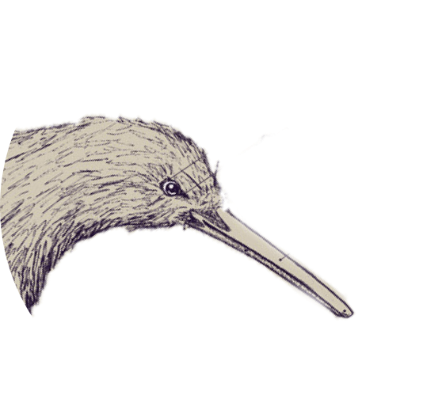

Los kiwi son criaturas tímidas y nocturnas con un sentido del olfato muy desarrollado debido a la existencia de verdaderos bigotes en torno al pico; tales bigotes son ficaces órganos olfativos estos ademas presentan generalmente inusual en un ave la presencia de fosas nasales en la punta de su largo y filoso pico.
